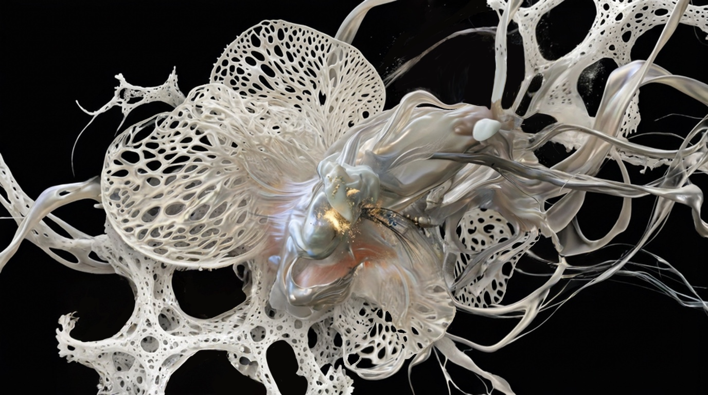

I developed a new interactive work that extends the ecological and somatic concerns of my doctoral research into a more explicitly participatory form. The work presents a video environment generated through TouchDesigner, in which AI-generated imagery and particle systems oscillate between states of coherence and dispersal.
Before any participant enters, the work is already in motion: particles drift and cluster according to their own parameters, hovering between order and chaos. In the absence of human participation, the system's generative logic continues to operate. The AI-generated imagery and particle structures evolve cyclically between fixed parameters and stochastic perturbation, and this continuously unfolding state renders the work as a process always already in becoming.
Participants simply enter a temporal flow that has already begun, a relationship that resonates with Neo-Daoist understandings of ziran 自然 and wu wei 无为: acting by attuning to and participating in processes that are already underway (Chan, 2006; Chan, 2019).
The interaction is gesture-based, mediated through a Leap Motion sensor placed on a plinth in front of the screen. Hand movements modulate the movement trajectories and density changes of the particle system, though this influence is always jointly conditioned by the algorithm, parameter settings, and the uncertainties of the sensor itself. The particles are understood here as analogous to fungal spores: they disperse, drift, and respond to directional forces across brief temporal scales. When a participant opens their palm, particles gather toward the detected centre of the hand; when they close their fist, particles disperse outward.
Recognition delays, misreadings, and interference between multiple hands keep the causal relationship open. This uncertainty introduces an ethical dimension into the work that resonates with Donna Haraway's Stay with the Trouble: interaction becomes a process of ongoing negotiation (Haraway, 2016). It also resonates with Merleau-Ponty (1962): the hand reaching toward the screen is simultaneously reaching toward its own capacity to sense.
The work's blue-white tonality, luminous quality, and fluid structures evoked oceanic perceptual associations for many audiences. Perception is distributed across human and non-human actors (Braidotti, 2019), and the screen constitutes a perceptible interface within this structure, its surfaceness and volumetric quality placed in tension, forming a perceptual field that is simultaneously open and constrained.
Audiences enter the work through exploratory means, invited to find within the system a rhythm that attunes to their own body. The attempts, errors, and delays of gesture collectively constitute part of the interactive experience. When multiple participants engage simultaneously, their gestures create intersections and interference, gradually revealing a social dimension of movement relations. Drawing on Erin Manning's concept of a "field of relation," I understand these moments as among the most honest the work produces: perception is here generated relationally, and experience flows continuously between individuals and within the system (Manning, 2025).
Within the overall structure of this exhibition, I understand interaction as a situated practice of responsiveness. The human body participates as one element within an ecology, perception unfolding across body, technology, and algorithm. Establishing connection through gesture allows participants to find their own position within the work.
In the next phase, I intend to develop workshop formats that widen this point of entry, guiding participants toward fuller somatic attunement and exploring what it means to move with a system that responds according to its own logic, one that, as Guo Xiang understood it, unfolds through its own conditions of existence (Gao, 2022).